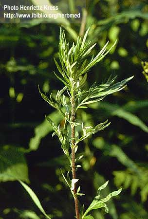
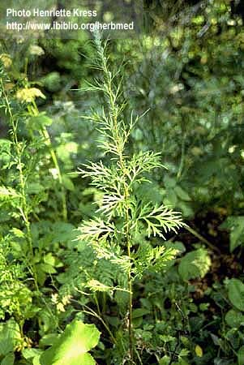

Artemisia vulgaris
Auct.
Taxonomic Details

----- Correct Name
----- Classification
----- Synonyms
----- Common Names
Other Biological Details
----- Habit and Habitat
----- Diagnostic Features
----- Reproductive Biology
---------- Breeding System
---------- Phenology
---------- Pollinators
---------- Seed Biology
----------Seed Germination
------ Cultivation
----- Major Pests and Diseases
Economic Potential and Uses
----- Parts Used
----- Uses
----- Harvesting Practices
----- Produce and Products
----- Chemistry
----- Processing Techniques
----- Other uses
----- Economic Potential to the
Country
----- Export Potential
Miscellaneous Information
Literature
Taxonomic
Details
Correct Name :
Artemisia vulgaris Auct.

Family : Compositae
Synonyms : Artemisia indica;
Artemisia paniculata;
Common Names :
English: Indian worm-wood, Indian Wornwood, Motherwort, Mugwort
Sanskrit: Nagadamani
Hindi: Dona, Dons, Gathivana,Majtari, Mastaru, Nagdona, Nilapushpa, Nugduna
Bengali: Nagdona
Malayalam: Appa, Chi ai, Damanakam, Kattuchatti, Khee ngai, Ki ai, Makkippu, Mashipatri,
Ngai, Nilampala, Rirunittipacha
Marathi: Dhordavana, Gathona, Sthauneya,Sugandha,Surband
Tamil: Machipatri, Mashibattiri and Tirunama.
Telugu: Davanamu, Machipatri and Mashipatri.
Back to Top
Other
Biological Details
HABIT & HABITAT:
A tall aromatic shrub, found throughout the mountainous
districts of India, ascending to 12000' in the western Himalayas and to 5000-8000'
in Sikkim, the Khasia, Ava and Martaban mountains. It grows at Mount Abu in
Marwar and on the Western Ghats from Konkan Southwards to Ceylon. It can be
seen in Hilly regions, hilly slopes, Maize fields, moist localities, Sugar cane
fields, tea gardens and waste land.
Availability :
BioticZone: Deccan Plateau and Western Himalayas.
Misc: Mahableshwar, Mount Abu and Purandhar Fort.
Country: Asia,Burma, ceylon, China, Europe, India, Japan, Java, Malay and Siam.
Zone: East, Islands, North, North East, South and West.
State: Arunachal Pradesh, Assam, Himachal Pradesh, Jammu & Kashmir, Maharashtra,
Manipur, Meghalaya, Mizoram, Nagaland, Sikkim, Tamil Nadu and Tripura.
District: Chamba, Pune, Salem, Simla and Tiruchi.
Status :
Back to Top
DIAGNOSTIC FEATURES
Back to Top
REPRODUCTIVE BIOLOGY
Breeding System :
Phenology :
The flowering ocurs during April-July and also during August-October.
Pollinators:
Seed Biology :
Seed Germination:
Propagation:
Seed - surface sow from late winter to early summer in a greenhouse and do not
allow the compost to dry out. When large enough to handle, prick out the seedlings
into individual pots. If growth is sufficient, they can be planted out into
their permanent positions in the summer, otherwise grow them on in a cold frame
for their first winter and then plant them out in the spring.
Basal cuttings in late spring. Harvest the young shoots when about 10 - 15cm
long, pot up in a lightly shaded position in a greenhouse or cold frame and
plant them out when well rooted.
Cultivation:
Easily grown in a well-drained circumneutral or
slightly alkaline loamy soil, preferring a sunny position and a moist soil.
Plants are longer lived, hardier and more aromatic when they are grown in a
poor dry soil. Tolerates a pH in the range 4.8 to 8.2. Established plants are
drought tolerant.
Back to Top
MAJOR PESTS & DISEASES
Pests:
Diseases:
Back to Top
Economic
Potential and Uses
Parts used:
All
parts of the plants.
Uses:
- Leaves - raw or cooked. Aromatic
and somewhat bitter. Their addition to the diet aids the digestion and so they
are often used in small quantities as flavouring, especially with fatty foods.
They are also used to give colour and flavour to glutinous-rice dumplings (Mochi).
-
The young shoots are used in spring. In Japan the young leaves are used as a
potherb. The dried leaves and flowering tops are steeped into tea. They have
also been used as flavouring in beer, though fell into virtual disuse once hops
came into favour.
Harvesting
Practices
Produce and Products :
Oil
Back to Top
Chemistry:
The plant yields
about 0.2% volatile oil . A sample of the oil from the plants collected in Bengal
had the following contents: sp.gr., 0.9222; and contains a- thujone. This oil
has been found to be good to be a good larvacide like kerosene, although it is
only a feeble insecticide.
Back to Top
Processing Techniques
Back to Top
Other Uses:
- The fresh or the dried plant repels insects, it can be used as a spray but caution
is advised since it can also inhibit plant growth.
- A weak tea made from the infused
plant is a good all-purpose insecticide. An essential oil from the plant kills
insect larvae.
- The down on the leaves makes a good tinder for starting
fires.
- Oil is a feeble insecticide.
- In Indian Medicine, the leaves and flower tops
are administered in the form of an infusion in case nervous and spassmodic
affections. It is also said to be antiseptic, expectant and anthelmintic.
Antiseptic; Antispasmodic;
Appetizer; Carminative; Cholagogue; Diaphoretic; Digestive; Diuretic;
Emmenagogue; Expectorant; Foot care; Haemostatic; Nervine; Purgative;
Stimulant; Tonic; Women's complaints.
Mugwort has a long history of use in herbal medicine especially in matters
connected to the digestive system, menstrual complaints and the treatment of
worms. It is slightly toxic, however, and should never be used by pregnant
women, especially in their first trimester, since it can cause a
miscarriage. Large, prolonged dosage can damage the nervous system.
All parts of the plant are anthelmintic, antiseptic, antispasmodic,
carminative, cholagogue, diaphoretic, digestive, emmenagogue, expectorant,
nervine, purgative, stimulant, slightly tonic and used in the treatment of
women's complaints.
The leaves are also said to be appetizer, diuretic, haemostatic and
stomachic. They can be used internally or externally. An infusion of the
leaves and flowering tops is used in the treatment of nervous and spasmodic
affections, sterility, functional bleeding of the uterus, dysmenorrhoea,
asthma and diseases of the brain. The leaves have an antibacterial action,
inhibiting the growth of Staphylococcus aureus, Bacillus typhi, B.
dysenteriae, streptococci, E. coli, B. subtilis, Pseudomonas etc. The leaves
are harvested in August and can be dried for later use.
The stem is also said to be antirheumatic, antispasmodic, and stomachic.
The roots are tonic and antispasmodic. They are said to be one of the best
stomachics. They are harvested in the autumn and dried for later use.
The leaves, placed inside the shoes, are said to be soothing for sore feet.
The compressed dried leaves and stems are used in moxibustion. Another
report says that the down from the leaves is used.
The stem is also said to be antirheumatic, antispasmodic, and stomachic.
The roots are tonic and antispasmodic. They are said to be one of the best
stomachics. They are harvested in the autumn and dried for later use.
In Indian medicine, the leaves and flowers tops are administered in the form
of an infusion in cases of nervous and spasmodic affections. It is also said
to be antiseptic, expectorant and anthelmintic.
Economical
Potential to the country
Back to Top
Export Potential
Back to Top
Miscellaneous
Information
- Known Hazards: The plant might be poisonous in large doses. Skin contact can cause
dermatitis in some people.
- Members of this genus are rarely if ever troubled by browsing deer.
-
Mugwort is an aggressive and invasive plant; it inhibits the growth of nearby
plants by means of root secretions.
- The sub-species A. vulgaris parviflora. Maximum is the form that is eaten
in China.
There are some named varieties. 'White' is a taller plant than the type species,
growing to 1.5 meters. It has a strong; rather resinous or "floral"
taste similar to chrysanthemum leaves and is used in soups or fried as a side
dish.
- The down on the leaves makes good tinder for starting fires.
Back to Top
Literature
- Kirtikar and Basu's illustrated Indian Medicainal
Plants 6 K. S. Mhaskar, E. Blatter, J. F. Caius
- http://www.ibiblio.org/herbmed/pictures/p02/pages/artemisia-vulgaris-2.htm
- Plants for future data base Index of latin Names
M.url. http:// www. Scs.
Leeds. Ac. Uk/ pfaf/ dat.
- The Wealth of India. A Dictionary of Indian Raw
Materials and Industrial Products. Raw Materials..Vol.1 A-B. 1948.P- 123. CSIR.
New Delhi. India.
Back to Top